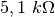

Opto-electric signal transmission
Objective
Demonstrate the transmission of signals using light. An LED is powered by a 1kHz signal and the light is made to fall on a photo-transistor.


Procedure
- Keep the LED facing the photo-transistor and set SQR1 to 1000Hz
- Repeat the experiment by changing the frequency.
Discussion
The SEN input is internally connected to 5 volts through a 
resistor. The output of the photo-transistor at  is shown in figure.
The square trace is the voltage across the LED. When the LED is ON,
photo-transistor conducts and the voltage across the collector drops to
is shown in figure.
The square trace is the voltage across the LED. When the LED is ON,
photo-transistor conducts and the voltage across the collector drops to
 . When the LED is OFF the photo-transistor goes into cut off
mode and the collector shows almost the supply voltage. The rise and
fall times of the photo-transistor seem to be different. Find the upper
limit of the frequency that the given photo-transistor can respond.
. When the LED is OFF the photo-transistor goes into cut off
mode and the collector shows almost the supply voltage. The rise and
fall times of the photo-transistor seem to be different. Find the upper
limit of the frequency that the given photo-transistor can respond.
Repeat this experiment with a Fiber Optic cable to guide the light from LED to the photo-transistor.